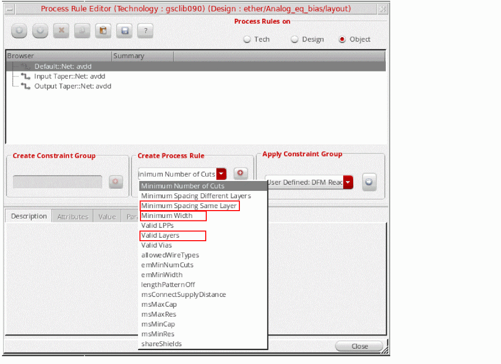
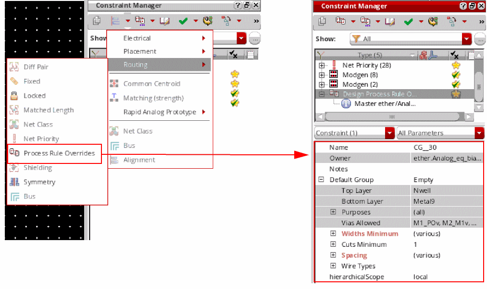

Support for Net PROs in Virtuoso Floorplanner
A net process rule override (PRO) is a constraint defined on a specific net to override the generic foundry and design process rules on that net. Use either the
The following image shows how to define a net PRO using the Process Rule Editor.

The following image shows how to define a net PRO using the Constraint Manager.

The following process rule overrides are supported on nets:
- Minimum Spacing Same Layer override on the pin net, which defines the minimum space around each pin.
- Minimum Width override on the pin net, which defines the minimum width of pins.
-
Valid Layers override on the pin net, which specifies the layers on which the pins belonging to the net can be placed. There can either be a single layer or a list of valid layers. A net PRO can be defined for both top-level (level-0) and soft block (level-1) nets.
Top-level nets: If a net PRO is defined for a connected top-level net, then the pins are driven by these net PRO values. Soft block nets: A net PRO defined for a connected soft block net has a higher priority than that defined for a connected top-level net. Therefore, the net PRO values of the connected top-level net are applied only when there are no net PROs definitions for the soft block net.
Return to top